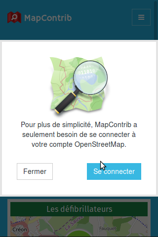 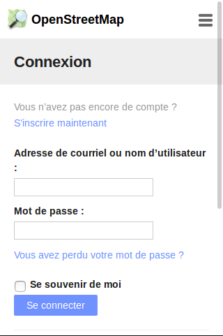 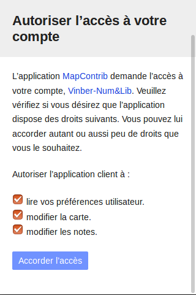
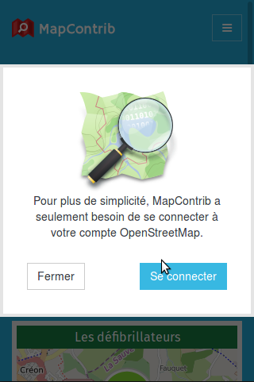 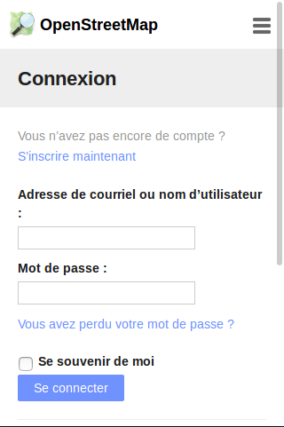 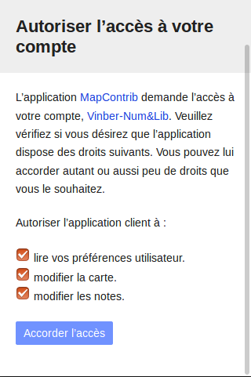À l'instar d'OpenBeerMap, d'OsmHydrant et de wheelmap, MapContrib vise à faciliter la contribution à OpenStreetMap, par la création de thèmes en fonction des TOC (Troubles Obsessionnels Cartographiques) propre à chacun. Ces thèmes se basent sur : - une requête overpass (technique pour aller interroger une copie synchronisée de la base de donnée OpenStreetMap), - la définition de "types de noeuds",
Ce tutoriel vise à accompagner la création d'un thème. Les pré-requis pour pouvoir le faire sont :
Page d'accueil
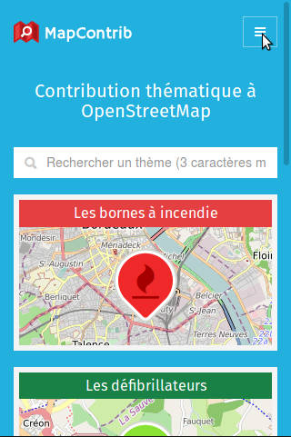 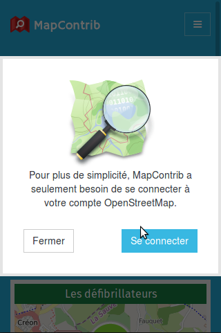 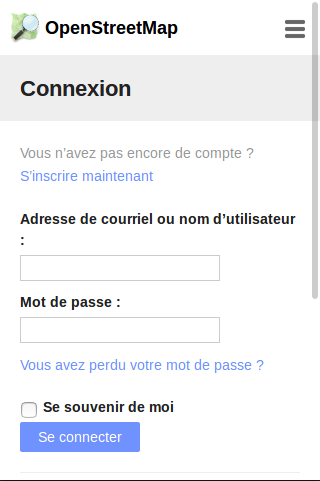 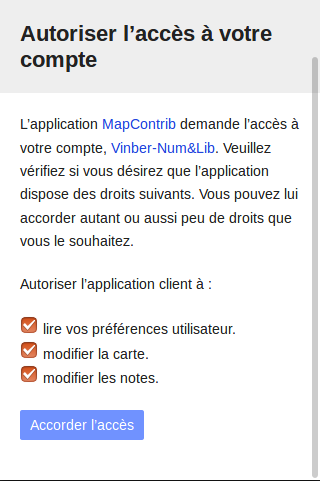
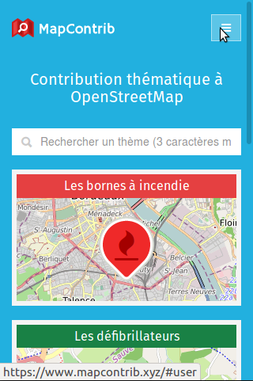 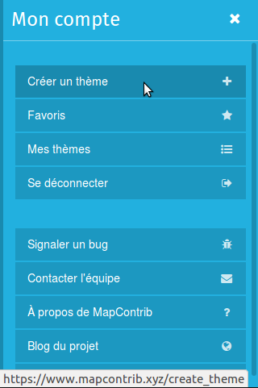
À noter :
Un thème porte un titre, peut s'ouvrir sur un territoire particulier et possède quelques options générales décrites ci-dessous. Toutes ses options sont modifiables par la suite.
loupe ou au clavier Ctrl+fRechercher un lieu
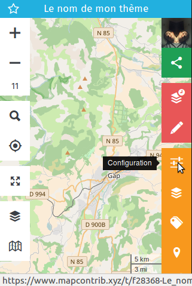 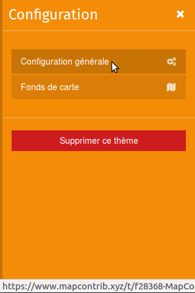
Colonne configuration générale - partie 1
Nom du thème / apparaît à la fois dans l'url et en haut du thèmeDescription / permet de décrire le sujet de votre thème. Lorsque ce champ est rempli, un i apparaît à coté du nom du thème et permet d'accéder à la description.Colonne configuration générale - partie 1-1
Colonne configuration générale - partie 1-2
Colonne configuration générale - partie 1-3
Colonne configuration générale - partie 2
Positionnement / Enregistrer les paramètres actuels / permet de conserver la géolocalisation et le niveau de zoom pour une personne arrivant sur le thème,Géolocalisation / va demander l'autorisation de se géolocaliser à toute personne arrivant sur le thème,Colonne configuration générale - partie 3
Géocodeur / permet de définir le géocodeur utilisé lors des recherche (Ctrl+f). Par défaut, Photon est utilisé pour des raisons de fluidité.Affichage des informations / les informations des POI peuvent être affichées dans plusieurs types de fenêtres. Par défaut en colonne à droite, il est aussi possible de changer le comportement du thème en affichant :Infobulles / des fenêtres modales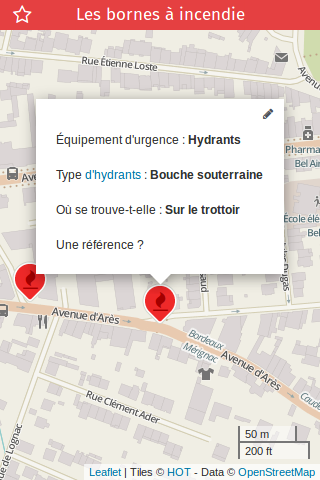 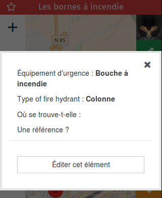
Cela permet de définir les fonds de cartes mis en avant par le créateur du thème. Les contributeurs auront cependant la possibilité d'en choisir d'autres, ceux définis par le créateur du thème sont simplement mis en avant.
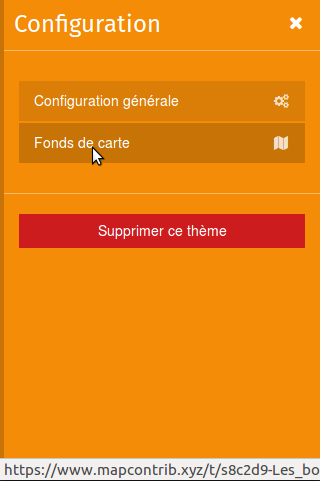 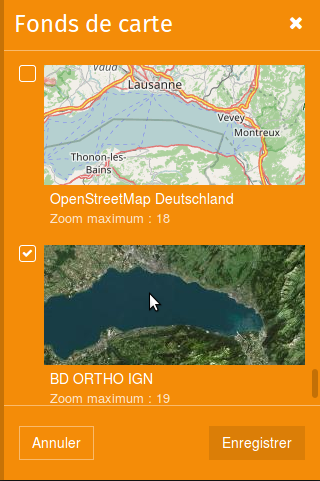
Plusieurs couches de données peuvent être créées. Cependant, quelques précautions avant de créer une dizaine de couches différentes: - dans les cas des couches "overpass" : trop de couches simultanées renvoient des erreurs, les serveurs overpass n'appréciant pas d'avoir trop de requêtes provenant d'une même adresse "IP", - dans les cas d'autres types de couches : trop de données peuvent aussi saturer l'explorateur internet, c'est coté client que se passe les calculs !
Donc 4 types de données peuvent être ajoutés : - des données provenant directement d'OpenStreetMap à travers une requête overpass (c'est le coeur de MapContrib),
Mais aussi pour permettre de faire des comparaisons avec les données OSM : - des données dans un fichier csv comportant des titres de colonnes longitude et latitude, - par un fichier GeoJSON, - par un fichier GPX,
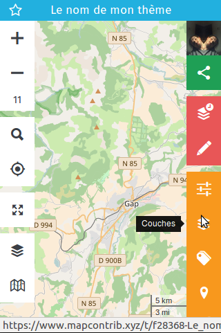 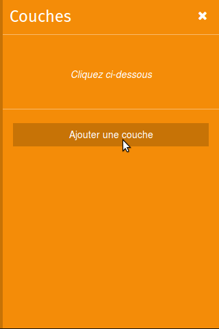 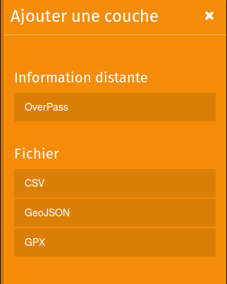
Nom / définit le nom de cette couche, telle que cela apparaît pour les contributeurs,Description / permet de mieux renseigner le contenu de la couche -> supporte le markdown !
Visibilité / va permettre au créateur de thème de préparer de nouvelles couches mais de ne pas les montrer aux contributeurs sur le thème,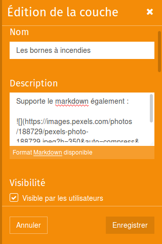 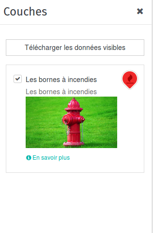
Création couches - Partie 4
Dans l'édition de la couche, la possibilité de personnaliser la Représentation sous forme de Points groupables ("clustering" par défaut) ou de Carte thermique (avec quelques options disponibles).
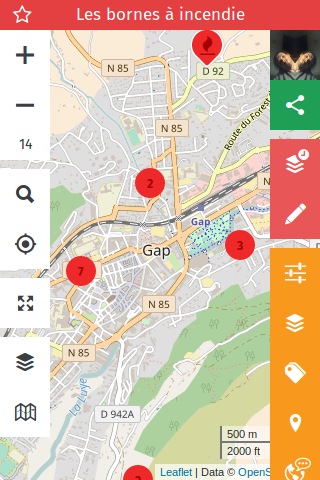 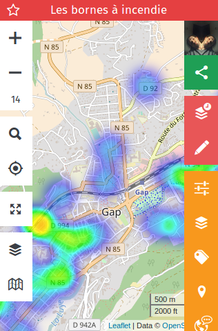 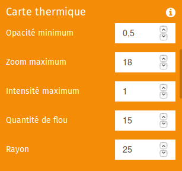
Création couches - Partie 4
Les marqueurs de chaque couche sont personnalisables : - au niveau de la couleur et de la forme, - avec une bibliothèque d'icônes, - avec un lien vers une image extérieure (assurez vous d'avoir les droits d'utilisation de l'image),
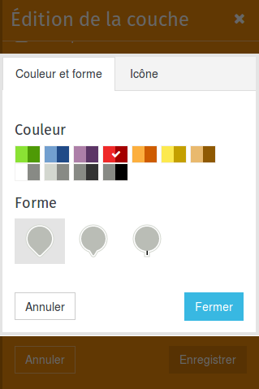 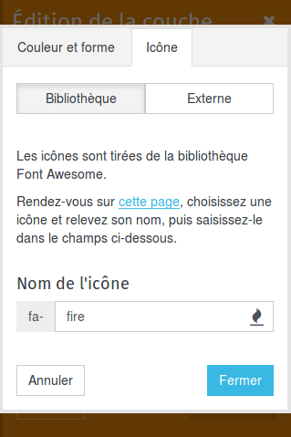 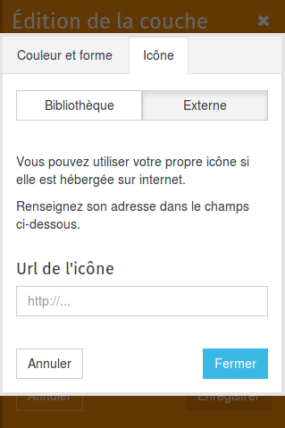
Pour chaque couche, les informations associées peuvent être personnalisées. Pour cela, il faut définir le Contenu des bulles (le markdown est supporté).
De plus, quelque soit la source (overpass, csv, GeoJSON, GPX), les données peuvent être affichées de manière dynamique, en utilisant une clé entre accolade : {clé}.
La clé peut-être "l'en-tête" de colonne du fichier csv ou la clé du couple clé/valeur de l'ontologie OpenStreetMap.
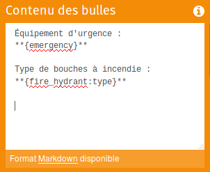 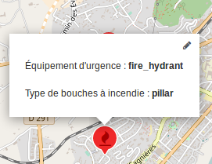
Dans le cas d'une couche de type overpass, plusieurs autres personnalisations sont possibles.
Couche overpass - Partie 1
Zoom minimum / définit la valeur à laquelle la requête overpass se déclenche,Requête OverPass / Zone pour l'exécution de la requête
Le cache
Selon le zoom minimum défini, la requête peut ne pas se déclencher à l'ouverture du thème. Il faudra alors zoomer pour permettre le déclenchement.
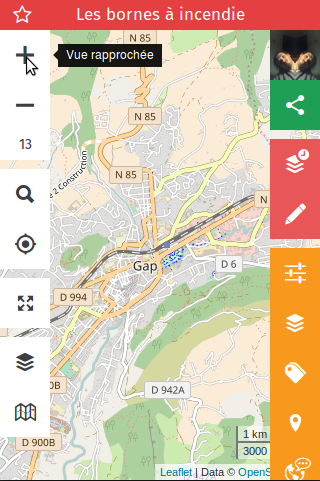 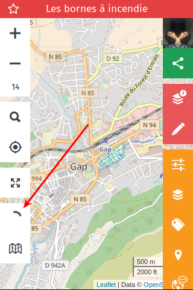 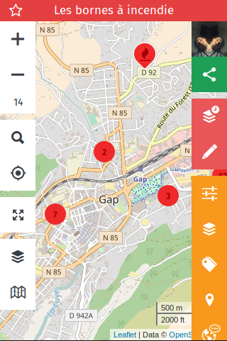
Nom, Description, Visibilité, Représentation (groupable ou thermique), Marqueur et Contenu des bulles fonctionnent de la même manière. Seule la manière de voir des données diffèrent, par l'import d'un fichier depuis son ordinateur. Ces données ne seront ni modifiables, ni déplaçables et n'ont pas d'interactions avec la base de données OpenStreetMap. Ces sources de données peuvent servir de comparaison, vérification de complétude par rapport à une autre source, ...
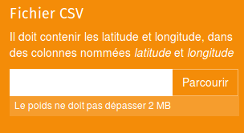 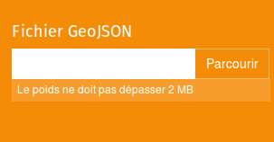 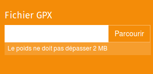
La configuration des tags va permettre par la suite de les utiliser : - pour la traduction des types de noeuds ("modèles" / "presets") : voir paragraphe suivant) - pour l'appel dynamique dans les bulles ("pop-ups") et donc pour la traduction dans les données dynamiques : cela permet ainsi d'avoir une interface sans aucun mot étranger (souvent un frein pour les contributeurs ni geek ni cartographe ni contributeur).
Vous pouvez créer autant de tags que nécessaire, cependant il faut garder le lien avec la requête overpass... Bien "penser" ce que l'on veut voir, améliorer, ajouter avant de se lancer dans la requête, les tags, les modèles, la traduction !
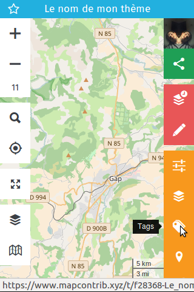 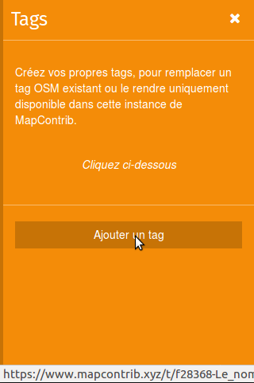 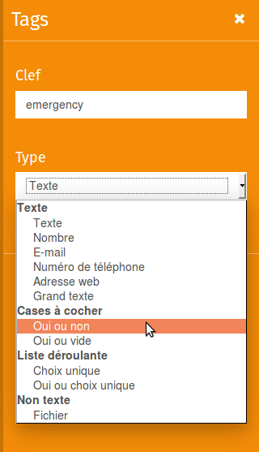
Type / permet de définir différents formats que l'on retrouvera ensuite dans les Types de noeuds et différentes présentations !
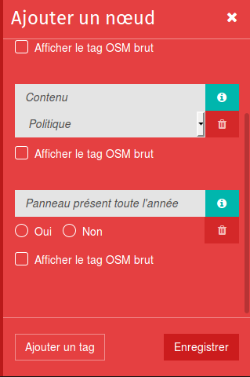 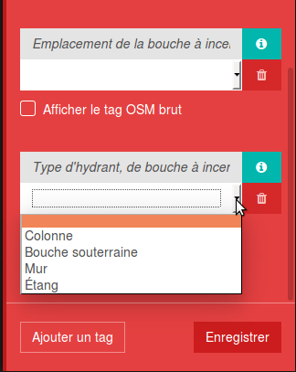 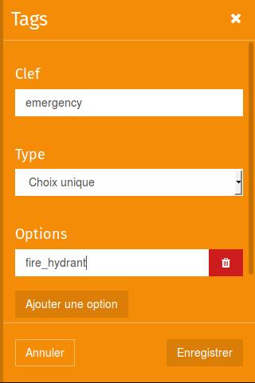 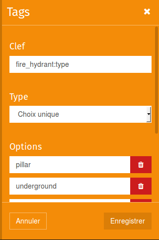 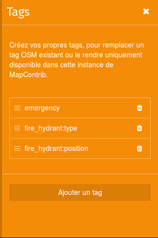
Les types de noeuds permettent de définir à la fois : - les tags pré-remplis qui pourront être utilisés pour compléter, qualifier des données existantes (fusion des tags entre le noeud existant et le type de noeud), - les tags pré-remplis qui pourront être ajoutés lorsque un noeud est manquant,
 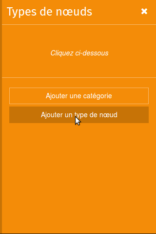 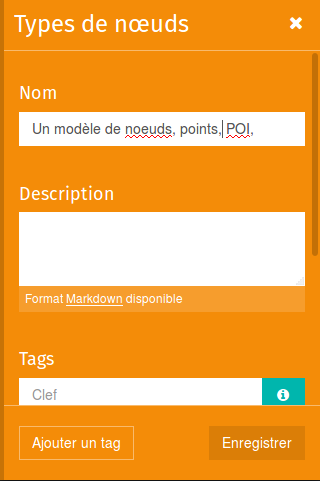 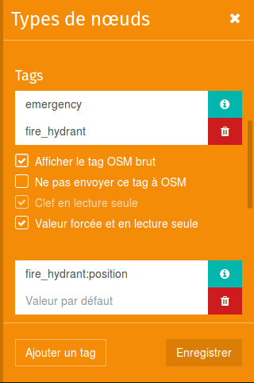 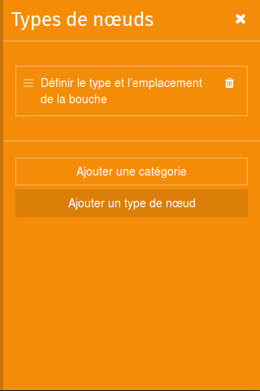
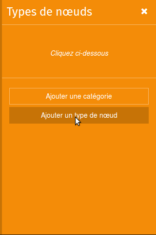 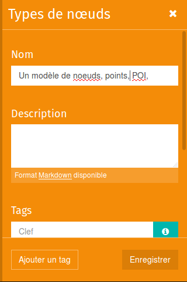 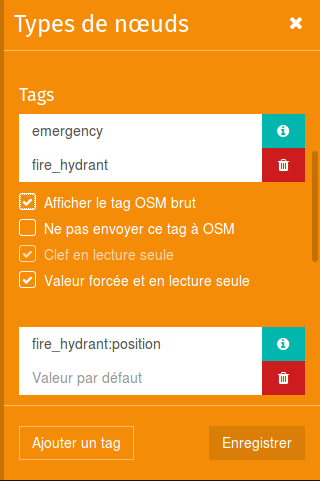 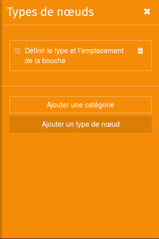
Cela se traduit donc pour le contributeur en un noeud "pré-rempli" :
Après avoir rempli l'ensemble des informations il est possible de traduire les thèmes pour qu'il soit adapté en fonction de la langue du navigateur. L'absence de traduction d'une langue entraîne l'utilisation des chaînes de caractères par défaut (donc par défaut remplir les champs comme indiqué ci-dessus, puis traduire seulement les éléments nécessaires / souvent tags !). Si vous avez écrit en français sauf les tags, il n'est pas nécessaire de remplir les éléments de traduction concernant la configuration générale, les couches ou les types de noeuds. En l'absence de traductions, ceux sont les contenus écrit initiaux qui sont affichés. Ces traductions seront nécessaires pour que cela fonctionne dans d'autres langues.